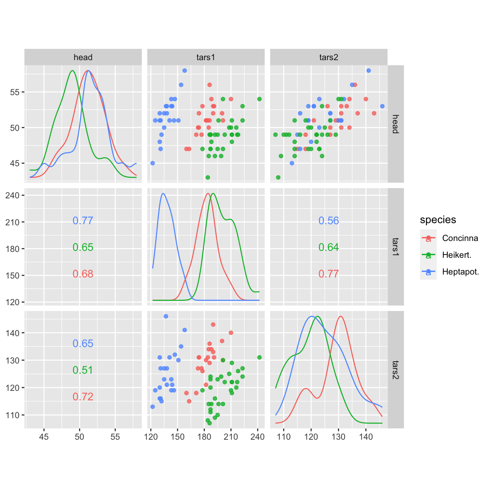

vignettes/ggscatmat.Rmd
ggscatmat.Rmdlibrary(GGally) #> Loading required package: ggplot2 #> Registered S3 method overwritten by 'GGally': #> method from #> +.gg ggplot2
GGally::ggscatmat()
The primary function is ggscatmat(). It is similar to ggpairs() but only works for purely numeric multivariate data. It is faster than ggpairs(), because less choices need to be made. It creates a matrix with scatterplots in the lower diagonal, densities on the diagonal and correlations written in the upper diagonal. Syntax is to enter the dataset, the columns that you want to plot, a color column, and an alpha level.

In this plot, you can see that the three different species vary a little from each other in these three variables. Heptapot (blue) has smaller values on the variable tars1 than the other two. The correlation between the three variables is similar for all species.
John W Emerson, Walton A Green, Barret Schloerke, Jason Crowley, Dianne Cook, Heike Hofmann, Hadley Wickham. The Generalized Pairs Plot. Journal of Computational and Graphical Statistics, vol. 22, no. 1, pp. 79-91, 2012.